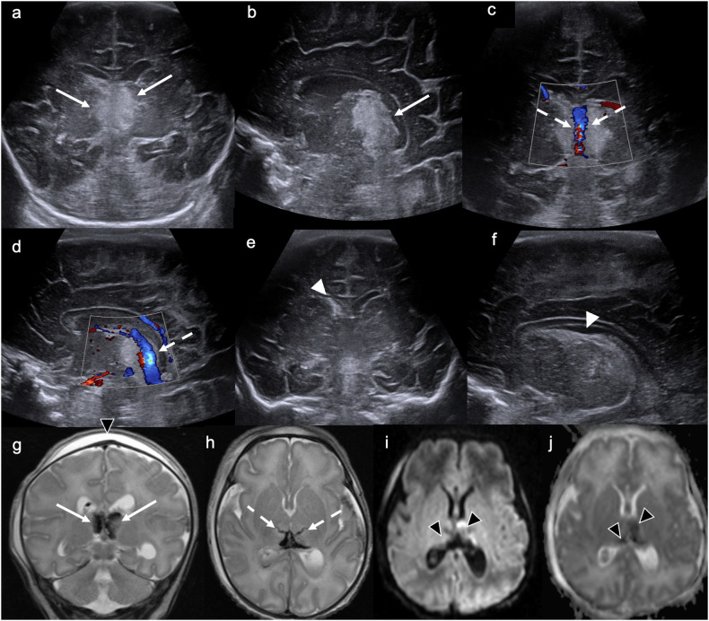
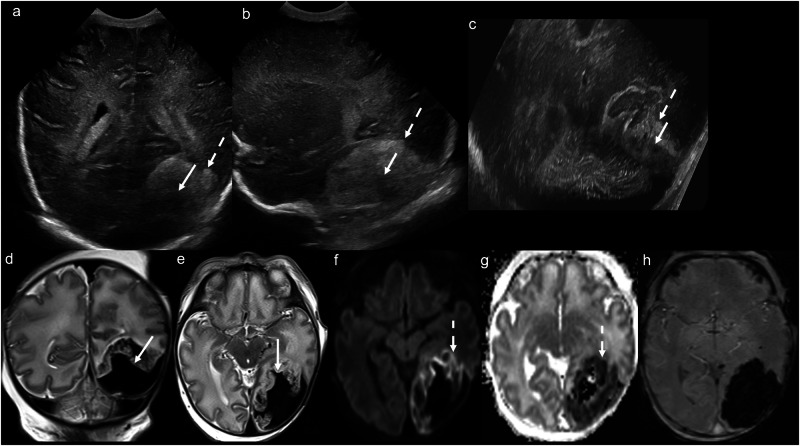

1965 — Huyết khối xoang tĩnh mạch não ở trẻ sơ sinh / Neonatal cerebral sinovenous thrombosis (CSVT)
Tags: pattern:huyet-khoi-xoang pattern:tang-am-doi-thi pattern:xuat-huyet-doi-thi pattern:mat-dong-xoang pattern:giam-khuay-tan vung:nao vung:nao-that vung:so-sinh protocol:sieu-am-qua-thop protocol:MRI-so-nao protocol:MRV
Mức chắc chắn (certainty): tổng hợp y văn (literature synthesis) — số liệu lấy từ một tổng quan siêu âm sọ trẻ đủ tháng có hình CUS + MRI đối chiếu (PMC12283534, Insights into Imaging 2025, CC BY 4.0), một đoàn hệ 9 sơ sinh (PMC9406898, Children 2022, CC BY) và một nghiên cứu bệnh–chứng 26 sơ sinh ≥ 35 tuần (PMC6714919, Clin Appl Thromb Hemost 2019, CC BY-NC). Không có RCT riêng cho sơ sinh; phần kháng đông là ngoại suy từ hướng dẫn người lớn/trẻ lớn, đã ghi rõ chỗ suy luận.
Câu chốt: Ở sơ sinh, huyết khối xoang không biểu hiện bằng đau đầu/liệt nửa người mà bằng co giật, bú kém, li bì — và dấu hiệu hình ảnh mạnh nhất không phải là cục huyết khối, mà là tổn thương ĐỒI THỊ hai bên (tăng âm trên siêu âm → giảm tín hiệu T2 → hạn chế khuếch tán). Ba con số quyết định: (1) sơ sinh là nhóm tuổi mắc nhiều nhất, gộp 1:1.600–1:2.300 trẻ sinh sống (sổ đăng ký Hà Lan 1–12/100.000, Canada 47/100.000); (2) 81% ca khởi phát trong tuần đầu và 88% có co giật; (3) 81% huyết khối nhiều xoang, 81% có tổn thương chất trắng, 58% có xuất huyết nội thất và/hoặc đồi thị — chính cặp đồi thị là chìa khóa chẩn đoán trên siêu âm.
1. Tổng quan bệnh học – cơ chế hình ảnh (TẠI SAO)
1.1 Vì sao đúng trẻ sơ sinh: tam chứng Virchow ở một hệ tĩnh mạch "chảy chậm"
- Ứ trệ (stasis): xoang màng não là bể chứa dung tích lớn, dòng chảy chậm, áp lực thấp; ở sơ sinh lại thêm mất nước (bú kém, vàng da chiếu đèn, sốt), đa hồng cầu và tăng hematocrit → độ nhớt tăng, vận tốc dòng giảm.
- Tăng đông (hypercoagulability): nồng độ antithrombin III, protein C, protein S thấp sinh lý; yếu tố đông máu phụ thuộc vitamin K thấp; đột biến yếu tố V Leiden (OR 3,1; KTC 1,8–5,5), prothrombin G20210A (OR 3,1; KTC 1,4–6,8); riêng ở sơ sinh, FII G20210A có OR 10,96 (KTC 1,09–110,35) trong một nghiên cứu bệnh–chứng 26 ca — khoảng tin cậy rất rộng, chưa đủ để khẳng định.
- Tổn thương nội mạc (endothelial injury): đẻ khó (forceps/giác hút), ngạt chu sinh, nhiễm khuẩn huyết/viêm màng não, catheter tĩnh mạch rốn hoặc tĩnh mạch trung tâm đặt sát xoang.
- Bối cảnh thực hành: trong 26 ca, các yếu tố không do thrombophilia hay gặp nhất là nhiễm trùng (10 ca), catheter trung tâm (8 ca), bệnh não thiếu oxy–thiếu máu (4 ca) (PMC6714919). Trong 9 ca khác, 77,8% mẹ có thrombophilia di truyền, 44,4% ngạt chu sinh (PMC9406898).
1.2 Cơ chế hình ảnh: vì sao tổn thương nằm ở ĐỒI THỊ
- Huyết khối tĩnh mạch não sâu (tĩnh mạch não trong, tĩnh mạch Galen, xoang thẳng) → ứ máu tĩnh mạch → tăng áp lực mao mạch → phù độc tế bào (cytotoxic edema) rồi xuất huyết ở vùng do các tĩnh mạch xuyên đồi thị dẫn lưu. Đồi thị là "ngã ba" của hệ sâu nên tổn thương hai bên, đối xứng tương đối, khu trú đồi thị — khác hẳn nhồi máu động mạch não giữa (vỏ–dưới vỏ một bên).
- Thời gian T1/T2: máu tối cấp–cấp (deoxyhemoglobin) → T1 đồng tín hiệu, T2 giảm tín hiệu; bán cấp sớm (methemoglobin nội bào) → T1 tăng, T2 giảm; bán cấp muộn → T1 và T2 đều tăng. Vì vậy trên phim sơ sinh T2 giảm tín hiệu đồi thị = xuất huyết, còn T2 tăng = phù đơn thuần.
- Khuếch tán: phù độc tế bào → DWI tăng, ADC giảm; vùng xuất huyết có thể ADC giảm quanh ổ máu (đây là phần "còn cứu được" quanh ổ hủy tủy).
- Siêu âm: cục máu đông có trở kháng âm khác nhu mô → tăng âm; nhưng siêu âm qua thóp kém phân giải ở vùng xa (thalamus, hố sau, xoang ngang) và không thấy được huyết khối trong tĩnh mạch xuyên nhỏ — đúng ca minh họa dưới đây: CUS chỉ thấy đồi thị tăng âm, MRI mới thấy đường giảm tín hiệu của tĩnh mạch xuyên đồi thị bị huyết khối và ổ nhồi máu xuất huyết (Hình 1, PMC12283534).
- MRV (2D TOF hoặc MRV tương phản): mất tín hiệu dòng chảy trong lòng xoang = huyết khối; T1 sau tiêm thấy dấu "empty delta" ở xoang dọc trên khi có huyết khối thành.

*Sơ sinh 36 tuần, ngày thứ 2 sau đẻ forceps thất bại, bú kém. (a, b) Đồi thị trong tăng âm hai bên (mũi tên). (c, d) Doppler màu còn dòng ở tĩnh mạch não trong (mũi tên đứt). (e, f) Chất tăng âm ở sừng trước phải/cađô-đồi thị = xuất huyết mầm (GMH độ 1). (g) T2 giảm tín hiệu đồi thị hai bên = xuất huyết; (h) đường giảm tín hiệu tuyến tính của tĩnh mạch xuyên đồi thị bị huyết khối — không thấy trên CUS; (i, j) DWI/ADC hạn chế khuếch tán đồi thị = nhồi máu xuất huyết tĩnh mạch cấp. Nguồn: Insights into Imaging 2025, PMC12283534, Fig. 3, CC BY 4.0.*1.3 Dịch tễ và tiên lượng (định lượng)
| Chỉ số | Số liệu | Nguồn |
|---|---|---|
| Tần suất chung ở sơ sinh | 1:1.600–1:2.300 trẻ sinh sống | PMC9406898 (tổng quan) |
| Sổ đăng ký | Hà Lan 1–12/100.000; Canada 47/100.000 trẻ sinh sống | PMC9406898 |
| Huyết khối ở NICU | 6,9–15/1.000 ca nhập NICU (báo cáo cũ 2,4–5,5/1.000) | PMC9406898 |
| Thời điểm khởi phát | 81% trong tuần đầu sau sinh | PMC9406898 |
| Tuổi chẩn đoán (trung vị) | 11 ngày (IQR 6–21); MRI lúc 6 ngày (IQR 3–12) | PMC6714919 |
| Co giật | 88% (22/26) | PMC6714919 |
| Nhiều xoang cùng lúc | 81% (21/26); 44,4% (4/9) | PMC6714919, PMC9406898 |
| Vị trí hay gặp | Xoang ngang và xoang dọc trên cùng 53% (14/26 mỗi loại); xoang dọc trên 77,8% ở loạt 9 ca | PMC6714919, PMC9406898 |
| Tổn thương nhu mô | Chất trắng 81%; xuất huyết nội thất ± đồi thị 58% | PMC6714919 |
| Sống qua đợt cấp | > 90%; tử vong trong loạt 9 ca 22,2% (do biến chứng huyết khối: huyết khối trong tim, thiếu máu ruột) | PMC9406898 |
2. Mẫu hình + chẩn đoán phân biệt theo vị trí xoang (Gamut)
- Xoang dọc trên (superior sagittal sinus): huyết khối → nhồi máu/xuất huyết cạnh đường giữa hai bên, phù vỏ–dưới vỏ; trên CT không cản quang có dấu delta đặc ("dense triangle"), trên CUS là khối tăng âm hình tam giác ở đỉnh đầu; trên MRI/MRV là mất tín hiệu dòng chảy.
- Xoang ngang – xoang sigma (transverse/sigmoid): sau đẻ khó, viêm tai giữa, catheter, hay gặp ở thành sau hố sọ; cần cửa sổ xuyên chũm (transmastoid) mới thấy; biến chứng: xuất huyết tiểu não, nhồi máu thái dương–chẩm.
- Hệ tĩnh mạch sâu (tĩnh mạch não trong, Galen, xoang thẳng): tổn thương đồi thị hai bên (nhồi máu ± xuất huyết) — pattern gần như đặc hiệu ở sơ sinh; có thể kèm xuất huyết đồi thị–nội thất.
- Tĩnh mạch vỏ não (cortical veins): xuất huyết dưới màng mềm (subpial hemorrhage) với dấu "âm dương" (yin-yang sign) trên siêu âm, ổ nhồi máu xuất huyết quanh vỏ (Hình 2, PMC12283534).
- Gamut "đồi thị hai bên ở sơ sinh": huyết khối tĩnh mạch não sâu · bệnh não thiếu oxy–thiếu máu (HIE) thể nặng (thường kèm nhân bèo sẫm, không có máu) · bệnh chuyển hóa (axit hữu cơ, sulfit oxidase/molybdenum cofactor) · viêm não do enterovirus · u/xuất huyết hai bên do rối loạn đông máu.
- Gamut "co giật sơ sinh + hình ảnh bình thường/thoáng qua": huyết khối xoang thể nhỏ · nhồi máu động mạch não giữa (thường một bên, vỏ–dưới vỏ) · ngạt chu sinh · hạ calci/hạ đường · động kinh sơ sinh lành tính.
3. Ma trận đối chiếu (Chốt vào / Chốt loại)
| Thực thể | Hình ảnh điển hình | Chốt vào (rule-in) | Chốt loại (rule-out) | Gợi ý xác nhận |
|---|---|---|---|---|
| Huyết khối xoang dọc trên | CUS: khối tăng âm tam giác ở đỉnh; MRI: mất tín hiệu dòng trên MRV; CT: dấu delta đặc | Mất tín hiệu dòng trên MRV + phù/xuất huyết cạnh đường giữa | Còn dòng đầy đủ trên MRV 2 bình diện → không phải huyết khối tắc | MRV 2D TOF ± T1 sau tiêm; Doppler màu |
| Huyết khối tĩnh mạch não sâu (đồi thị) | Đồi thị tăng âm hai bên → T2 giảm → DWI tăng/ADC giảm; đường giảm tín hiệu tĩnh mạch xuyên | Đồi thị hai bên + giảm tín hiệu T2 (máu) ± hạn chế khuếch tán | Tổn thương vỏ–dưới vỏ một bên theo động mạch → nghĩ nhồi máu động mạch | MRI 1,5T: T2, DWI/ADC, SWI, MRV |
| Xuất huyết dưới màng mềm do huyết khối tĩnh mạch vỏ | Ổ giảm âm hình bầu dục đẩy lõm vỏ não (dấu âm dương), tăng âm chất trắng quanh | "Yin-yang" + ổ dưới màng mềm lồi vào vỏ | Máu dưới màng cứng do chấn thương: hình liềm, không đẩy lõm vỏ kiểu này | CUS xuyên thóp + sau; MRI T2*/SWI |
| HIE thể nặng (đủ tháng) | Đồi thị–nhân bèo sẫm tăng âm đối xứng, vỏ não có thể tăng âm; không có máu | Đối xứng, kèm tổn thương nhân bèo sẫm, tiền sử ngạt, không giảm tín hiệu T2 | Có giảm tín hiệu T2/SWI bloom → xuất huyết (nghĩ tĩnh mạch) | MRI sớm 48–96 giờ, DWI |
| Nhiễm trùng bẩm sinh (CMV) có vôi hóa quanh não thất | Nang dưới màng nội tủy/cađô-đồi thị, vôi hóa quanh não thất, giãn não thất | Nang + vôi hóa + giãn não thất, không có huyết khối | Không nang, không vôi hóa → ít nghĩ CMV | PCR CMV nước tiểu/máu, MRI |
| Nhồi máu động mạch não giữa | Vùng theo lãnh thổ động mạch, thường một bên, vỏ + dưới vỏ, hình nêm | Theo lãnh thổ mạch + DWI hạn chế khuếch tán | Tổn thương hai bên đồi thị không theo lãnh thổ → nghĩ tĩnh mạch | MRA/CTA ít dùng; MRI + siêu âm Doppler |

*Sơ sinh 35 tuần, phù thai không do miễn dịch. (a–c) CUS xuyên thóp và xuyên chũm: ổ giảm âm hình bầu dục vùng thái dương–chẩm trái, đẩy lõm vỏ não (mũi tên liền), tăng âm chất trắng quanh (mũi tên đứt) — dấu "âm dương". (d–e) T2 xác nhận xuất huyết dưới màng mềm; (f–g) DWI/ADC hạn chế khuếch tán vùng nhồi máu xuất huyết quanh ổ; (h) SWI nhậy từ tính mạnh. Nguồn: Insights into Imaging 2025, PMC12283534, Fig. 5, CC BY 4.0.*4. Protocol chụp + ngưỡng xử trí
4.1 Siêu âm qua thóp (CUS) — đầu tay, tại giường, không bức xạ
- Đầu dò: linear tần số cao 9–15 MHz cho vùng gần (não thất, đồi thị), curvilinear 5–8 MHz cho vùng sâu/hố sau; luôn dùng Doppler màu + phổ cho xoang dọc trên, tĩnh mạch não trong và xoang ngang.
- Cửa sổ bắt buộc: thóp trước (mặt phẳng vành + dọc giữa), thóp sau, và xuyên chũm (transmastoid) — thiếu cửa sổ chũm là bỏ sót xoang ngang/sigma.
- Ngưỡng hình ảnh: đồi thị tăng âm hai bên ≥ vùng nhân bèo sẫm bình thường + mất phổ tĩnh mạch não trong = nghi huyết khối sâu; giãn não thất bên > 10 mm (đo ở sừng chẩm) là dấu gián tiếp của tăng áp tĩnh mạch.
- Giới hạn phải nói rõ với lâm sàng: CUS bình thường KHÔNG loại trừ huyết khối xoang — trong ca minh họa, CUS không thấy huyết khối tĩnh mạch xuyên đồi thị mà chỉ thấy đồi thị tăng âm; MRI mới xác định (PMC12283534).
4.2 MRI — tiêu chuẩn chẩn đoán
- Từ 1,5 T (3 T cũng được nhưng cân nhắc nhiệt/SAR ở sơ sinh): T1 dọc giữa + T2 vành/trục + DWI/ADC + SWI (hoặc T2) + MRV 2D TOF*; T1 sau tiêm khi cần phân biệt huyết khối thành xoang với dòng chảy chậm.
- Không cần an thần: cho bú–quấn (feed-and-wrap), chăn ấm, nút tai; nếu cần thì theo dõi SPO₂ + nhiệt độ trong máy.
- Thời điểm: chụp khi trẻ đủ ổn định để chuyển — trong đoàn hệ 26 ca, MRI được làm trung vị ngày thứ 6 (IQR 3–12) và chẩn đoán xác định ở 11 ngày tuổi (PMC6714919); chậm trễ làm mất cửa sổ can thiệp.
4.3 Xử trí và ngưỡng (kháng đông, theo dõi)
- Bù dịch/điện giải là bước đầu (mất nước là yếu tố sinh bệnh chính); điều trị nhiễm trùng/viêm màng não; rút catheter tĩnh mạch trung tâm nếu đang đặt.
- Kháng đông: chỉ định khi huyết khối lan rộng/nhiều xoang, có tổn thương nhu mô, hoặc huyết khối tiến triển; LMWH là lựa chọn thuận tiện ở sơ sinh; theo dõi anti-Xa vì nồng độ antithrombin thấp → liều/kg ở sơ sinh thường cao hơn trẻ lớn và đáp ứng khó đoán. Thời gian 6 tuần – 3 tháng tùy mức lan và tái thông; không có RCT riêng ở sơ sinh (ngoại suy từ hướng dẫn người lớn — PMC9406898 nêu rõ).
- An toàn: trong loạt 9 ca điều trị LMWH 3 tháng, không ca nào xuất huyết nội sọ sau kháng đông (PMC9406898) — nhưng cỡ mẫu nhỏ, không thay thế được đánh giá cá thể (đặc biệt khi có xuất huyết đồi thị lớn).
- Theo dõi: CUS/MRI nhắc lại 4–6 tuần rồi 3 tháng để đánh giá tái thông và giãn não thất tiến triển; theo dõi động kinh (điện não đồ) và phát triển thần kinh đến 2 tuổi.
flowchart TD
A[So sinh co giat, bu kem, li bi] --> B[Sie u am qua thop + Doppler mau]
B --> C{Doi thi tang am hai ben hoac mat pho tinh mach nao trong?}
C -->|Co| D[MRI 1,5T: T2 + DWI + SWI + MRV]
C -->|Khong| E{Co yeu to nguy co: de kho, ngat, mat nuoc, catheter, nhiem trung?}
E -->|Co| D
E -->|Khong| F[Tim nguyen nhan khac: ha duong, ha calci, dong kinh so sinh]
D --> G{MRI xac nhan huyet khoi xoang?}
G -->|Co| H[Bu dich + dieu tri nhiem trung + rut catheter]
H --> I{Nhieu xoang, ton thuong nhu mo, hoac huyet khoi tien trien?}
I -->|Co| J[LMWH + theo doi anti-Xa, 6 tuan den 3 thang]
I -->|Khong| K[Theo doi CUS/MRI 4 den 6 tuan]
G -->|Khong| L[Chan doan khac: nhom mau dong mach, HIE, chuyen hoa, nhiem trung bam sinh]
J --> M[CUS/MRI lai 4 den 6 tuan va 3 thang + theo doi phat trien]
K --> M
5. Biến thể bình thường và cạm bẫy
- Xoang dọc trên "đặc" trên CT không cản quang có thể chỉ do hematocrit cao ở sơ sinh — dấu delta đặc không đủ chẩn đoán, phải xem MRV/CTV.
- Tăng âm đồi thị đối xứng sau ngạt (HIE) rất giống nhồi máu tĩnh mạch: hỏi tiền sử đẻ, Apgar, pH cuống rốn; tìm giảm tín hiệu T2/SWI bloom để phân định máu với phù.
- Vùng đỉnh đầu (vertex) là vùng gần đầu dò — dễ giả tăng âm do phản xạ bề mặt; phải đổi góc và so với MRV trước khi gọi là huyết khối xoang dọc trên.
- Tụ máu dưới cân (subgaleal) sau đẻ forceps có thể đè ép xoang và tạo hình giả trên CUS (Hình 1g, mũi tên đen) — đừng đọc thành máu dưới màng cứng.
- Bỏ sót "hai ổ" (satisfaction of search): thấy xuất huyết mầm ở sừng trước (GMH độ 1) là đủ "hài lòng" để dừng — nhưng chính GMH nhỏ + đồi thị tăng âm mới là chùm dấu hiệu của huyết khối xoang.
- Siêu âm bình thường ở trẻ chỉ "bú kém" không loại trừ gì: huyết khối xoang ngang một bên gần như không thấy nếu không có cửa sổ xuyên chũm.
6. Tự lượng giá — Blind Quiz
Ca 1 — sơ sinh 36 tuần, ngày 2, bú kém sau đẻ forceps thất bại
- Gợi ý lâm sàng: trẻ đủ tháng gần, đẻ forceps thất bại, bú kém, chưa co giật rõ.
- Câu hỏi: (1) Hai bất thường chính trên siêu âm là gì? (2) Vì sao Doppler màu vẫn thấy dòng ở tĩnh mạch não trong mà vẫn phải nghĩ huyết khối? (3) Chuỗi xung MRI nào quyết định (T2, DWI hay MRV)?
Đáp án ca 1
- Dấu hiệu: (a, b) đồi thị trong tăng âm hai bên, bên trái nhiều hơn; (e, f) chất tăng âm ở sừng trước phải/cađô-đồi thị = xuất huyết mầm độ 1. (g) T2 giảm tín hiệu đồi thị = máu; (h) đường giảm tín hiệu tuyến tính của tĩnh mạch xuyên đồi thị = huyết khối không thấy trên CUS; (i, j) DWI tăng/ADC giảm = nhồi máu xuất huyết cấp.
- Vì sao Doppler vẫn có dòng: huyết khối nằm ở tĩnh mạch xuyên nhỏ đi vào đồi thị, không phải thân tĩnh mạch não trong — dòng ở thân lớn không loại trừ tắc nhánh nhỏ.
- Chuỗi quyết định: T2 (phát hiện máu: giảm tín hiệu) + DWI/ADC (phù độc tế bào) + MRV (xác định mức lan xoang). CUS chỉ là dấu hiệu gợi ý, không phải chẩn đoán xác định.
- Nguồn: PMC12283534, Fig. 3.
Ca 2 — sơ sinh 35 tuần, phù thai, siêu âm thấy ổ cạnh vỏ não
- Gợi ý lâm sàng: phù thai không do miễn dịch, tầm soát nhiễm trùng và thiếu máu–thiếu oxy.
- Câu hỏi: (1) Ổ giảm âm hình bầu dục đẩy lõm vỏ là gì và dấu hiệu đó tên gì? (2) Vì sao phải chụp cửa sổ xuyên chũm? (3) SWI để làm gì khi đã có T2?
Đáp án ca 2
- Dấu hiệu: ổ xuất huyết dưới màng mềm (subpial) vùng thái dương–chẩm trái, đẩy lõm vỏ não, tăng âm chất trắng quanh = nhồi máu tĩnh mạch xuất huyết; hình ảnh "âm dương" (yin-yang sign) trên siêu âm.
- Cửa sổ xuyên chũm: ổ ở hố sọ sau/thái dương–chẩm nằm ngoài vùng nhìn của thóp trước; xoang ngang/sigma chỉ thấy qua xuyên chũm.
- SWI/T2:* nhạy hơn T2 với sản phẩm máu (hemosiderin/deoxyhemoglobin) → xác định mức xuất huyết và huyết khối tĩnh mạch vỏ; T2 chỉ cho biết "giảm tín hiệu", SWI cho biết lan tỏa nhậy từ tính.
- Nguồn: PMC12283534, Fig. 5.
Ca 3 — trẻ 5 ngày tuổi, co giật, CUS bình thường
- Gợi ý lâm sàng: đẻ thường, mẹ bị sốt ối non; trẻ bú kém từ ngày 3, nay co giật.
- Câu hỏi: (1) CUS bình thường có loại trừ huyết khối xoang? (2) Bước tiếp theo? (3) Nếu MRI thấy đồi thị hai bên giảm tín hiệu T2 + DWI hạn chế khuếch tán, chẩn đoán và hướng điều trị?
Đáp án ca 3
- Không loại trừ. CUS bỏ sót huyết khối tĩnh mạch sâu, xoang ngang một bên, huyết khối nhỏ; tổn thương có thể chỉ là đồi thị tăng âm thoáng qua.
- Bước tiếp: MRI 1,5T với T2 + DWI/ADC + SWI + MRV (không cần an thần, feed-and-wrap), kèm cấy máu/dịch não tủy vì nhiễm trùng là yếu tố thúc đẩy.
- Chẩn đoán: huyết khối tĩnh mạch não sâu gây nhồi máu xuất huyết đồi thị hai bên. Điều trị: bù dịch, kháng sinh theo ổ nhiễm, kháng đông LMWH có theo dõi anti-Xa khi tổn thương lan/nhu mô; theo dõi giãn não thất và động kinh.
- Cạm bẫy: gọi đây là "HIE" vì có tăng âm đồi thị — nhưng HIE không có máu (không giảm T2) và thường kèm nhân bèo sẫm.
Bài liên quan
- 216 – Dị dạng mạch não & huyết khối xoang tĩnh mạch (người lớn) — nền tảng về dấu delta, MRV và kháng đông ở người lớn.
- 1948 – Co giật & động kinh sau huyết khối xoang tĩnh mạch não — di chứng muộn, theo dõi điện não.
- 1949 – Thai kỳ sau huyết khối xoang tĩnh mạch não — cùng bệnh, khác bối cảnh (sản khoa).
- 6111 – Huyết khối tĩnh mạch thận ở trẻ sơ sinh — cùng nguyên lý "mất dòng tĩnh mạch ở sơ sinh", khác tạng.
- 3045 – Catheter rốn ở sơ sinh (UVC/UAC) — yếu tố nguy cơ đặt được và rút được.
- 6113 – Huyết khối động mạch chủ sau catheter động mạch rốn — mặt động mạch của cùng catheter.
Disclaimer y tế: Bài viết phục vụ học tập và tra cứu, không dùng để chẩn đoán độc lập khi chưa có người hướng dẫn. Ngưỡng kháng đông ở sơ sinh phải cá thể hóa theo cân nặng, anti-Xa và mức xuất huyết.